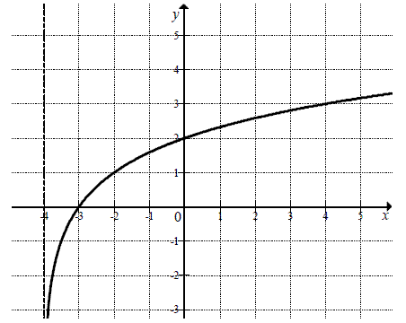

Matura 2013 maj PR
Rozwiąż nierówność \(|2x - 5| - |x + 4| \le 2 - 2x\).
\(x\in (-\infty ;-7\rangle \cup \left\langle -1;\frac{11}{3}
\right\rangle \)
Trapez równoramienny \(ABCD\) o podstawach \(AB\) i \(CD\) jest opisany na okręgu o
promieniu \(r\). Wykaż, że \(4r^2 = |AB| \cdot |CD|\).
Oblicz, ile jest liczb naturalnych sześciocyfrowych, w zapisie których występuje
dokładnie trzy razy cyfra \(0\) i dokładnie raz występuje cyfra \(5\).
\(1920\)
Rozwiąż równanie \(\cos 2x + \cos x + 1 = 0\) dla
\(x\in \langle 0,2\pi \rangle\).
\(x=\frac{\pi }{2}\) lub \(x=\frac{3\pi }{2}\) lub \(x=\frac{2\pi
}{3}\) lub \(x=\frac{4\pi }{3}\)
Ciąg liczbowy \((a, b, c)\) jest arytmetyczny i \(a + b + c =
33\), natomiast ciąg \((a - 1, b + 5, c + 19)\) jest
geometryczny. Oblicz \(a, b, c\).
\(\begin{cases} a=9 \\ b=11 \\ c=13 \end{cases} \) lub \(\begin{cases}
a=33 \\ b=11 \\ c=-11 \end{cases} \)
Wyznacz wszystkie wartości parametru \(m\), dla których równanie \(x^2 + 2(1 - m)x + m^2 - m = 0\) ma dwa różne rozwiązania rzeczywiste
\(x_1\), \(x_2\) spełniające warunek \(x_1 \cdot x_2 \le 6m \le x_1^2 + x_2^2\) .
\(m\in \langle 0;\ 3-\sqrt{7} \rangle \)
Prosta o równaniu \(3x - 4y - 36 = 0\) przecina okrąg o
środku \(S = (3, 12)\) w punktach \(A\) i \(B\). Długość odcinka \(AB\)
jest równa \(40\). Wyznacz równanie tego okręgu.
\((x-3)^2+(y-12)^2=625\)
Reszta z dzielenia wielomianu \(W(x) = 4x^3 - 5x^2 - 23x +
m\) przez dwumian \(x + 1\) jest równa \(20\). Oblicz wartość współczynnika \(m\) oraz
pierwiastki tego wielomianu.
\(m=6\), \(x=-2\) lub \(x=\frac{1}{4}\) lub \(x=3\)
Dany jest trójkąt \(ABC\), w którym \(|AC| = 17\) i \(|BC| = 10\). Na boku \(AB\)
leży punkt \(D\) taki, że \(|AD|:|DB|=3:4\) oraz \(|DC| = 10\). Oblicz pole trójkąta \(ABC\).
\(P=84\)
W ostrosłupie \(ABCS\) podstawa \(ABC\) jest trójkątem równobocznym o boku długości
\(a\). Krawędź \(AS\) jest prostopadła do płaszczyzny podstawy. Odległość wierzchołka \(A\) od
ściany \(BCS\) jest równa \(d\). Wyznacz objętość tego ostrosłupa.
\(V=\frac{a^3d}{4\sqrt{3a^2-4d^2}}\)
Rzucamy cztery razy symetryczną sześcienną kostką do gry. Oblicz prawdopodobieństwo
zdarzenia polegającego na tym, że iloczyn liczb oczek otrzymanych we wszystkich czterech rzutach
będzie równy \(60\).
\(\frac{5}{108}\)
Na rysunku przedstawiony jest fragment wykresu funkcji logarytmicznej \(f\)
określonej wzorem \(f(x)=\log_2 (x-p)\).  a) Podaj wartość \(p\).
b) Narysuj wykres funkcji określonej wzorem \(y =
|f(x)|\).
c) Podaj wszystkie wartości parametru \(m\), dla których równanie \(|f(x)| = m\) ma
dwa rozwiązania o przeciwnych znakach.
a) \(p=-4\); c) \(m\in (2;+\infty )\)